设计模式-1 装饰器模式
装饰器模式
简单的来说，就是为某一个类/对象增加一些额外的功能，类似于Spring的AOP，执行方法增强。
Topic
目标：学习装饰器模式
课题：
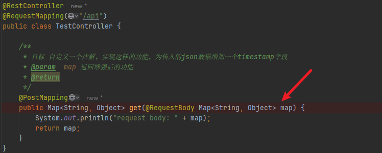
实现这样一个功能，在接收到post请求之后，为map添加一个timestamp字段，值为当前的时间戳(不依赖Spring的AOP)。
分析
为了实现这个装饰器，我们首先需要知道这里的map是怎么获取到的，这里直接打一个断点进入堆栈，对接口发送图中的请求。
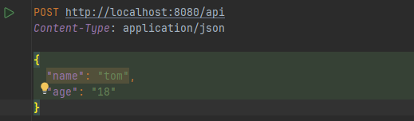
在接口收到请求之后，我们很容易就可以定位到这个方法，进入这个方法中，发现有getMethodArgumentValues这个方法的调用。
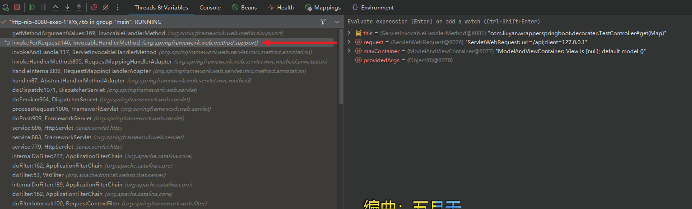
点进这个方法，看到这个方法中关于args的赋值逻辑:交给resolver.resolveArgument()进行处理，那么这个真正的逻辑就藏在resolver中。
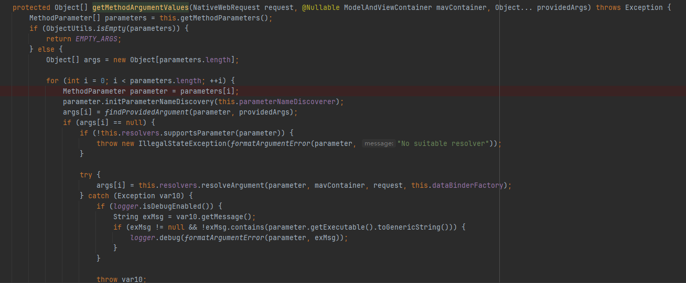
接着去看resolvers都是什么？ (HandlerMethodArgumentResolverComposite)
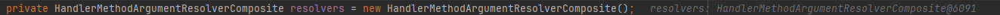
同时如果不加配置的情况下，resolvers的size应该是27个(这里就不截图了)。因此可以确定，我们如果想实现目标，需要添加一个自定义的resolver或者是对某一个resolver进行增强，也就符合装饰器模式的定义，也就需要再看看Spring是什么时候添加这些resolver的，点进去这个HandlerMethodArgumentResolverComposite给这几个addResolver()打上断点，再看看调用堆栈。
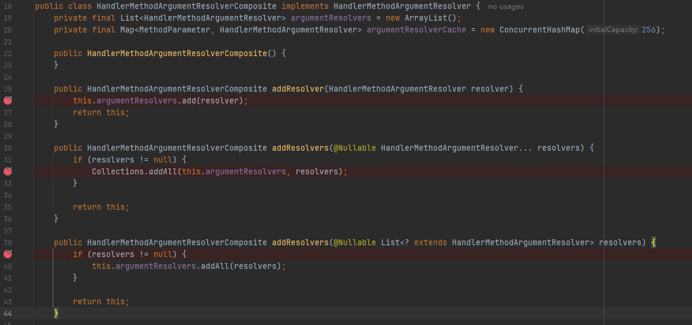
很容易定位到下边这些个箭头的方法~，这个getDefaultArgumentResolvers是一坨巨大的石山(一个个new出来然后再add)。
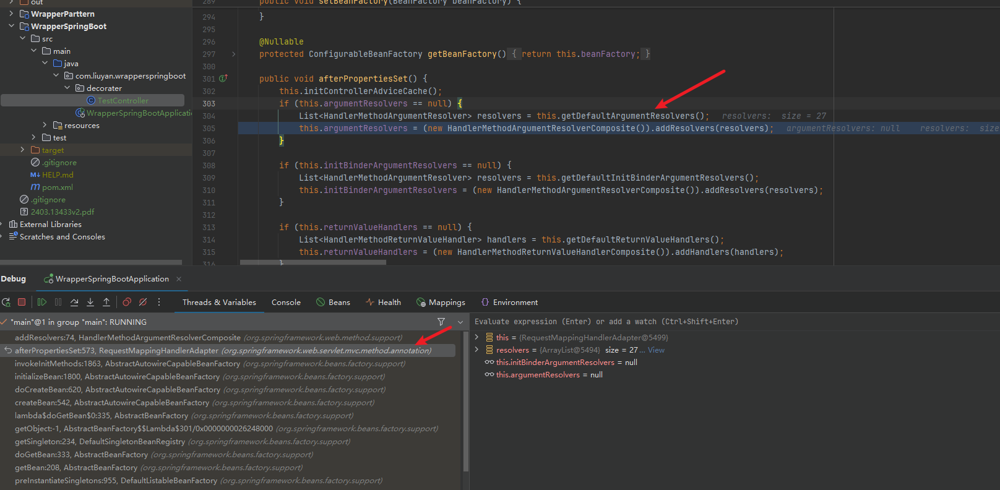
接着再回来，这里的HandlerMethodArgumentResolverComposite也是一种装饰器模式的实现，即它本身是一个...resolver，里边又塞了一个resolver的list，在实际执行resolve方法的时候，他先获取支持当前param的resolver再丢给对应的resolver进行处理。
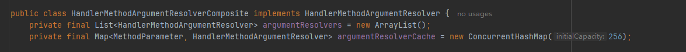
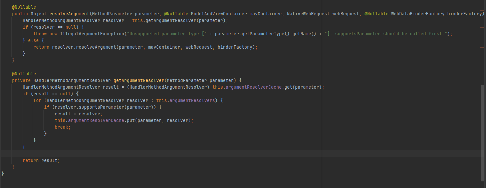
那么带有@RequestBody注解的param是通过哪一个resolver进行处理的，答案是RequestResponseBodyMethodProcessor，这时就比较简单了，我们需要查看一下这个resolver是怎么进行supportArgument的,再自定义一个resolver进行增强。
那么接下来我们需要做两件事情：
- 检查一下怎么supportArgument
- 依据supportArgument的结果，自行魔改一下。
- 看一下怎么把我们装饰之后的东西放到先前的resolvers中
可以看到，他是直接检查是否有@RequestBody注解，来判断是否supportArgument，那么controller中的map就是在这个类下的resolveArgument()中创建的，到这，我们就大体可以实现目标了。
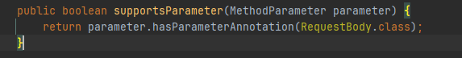
简单写一下我们的装饰器：
1 | |
那么目标1，2都已经实现了，接着我们要看看怎么把我们的decorater放到resolvers中。还记得我们我们之前说的一段石山代码吗，那里就是初始化这里resolvers代码的敌方，不过我们需要的是添加到自定义的resolver,截一部分图看看吧~。
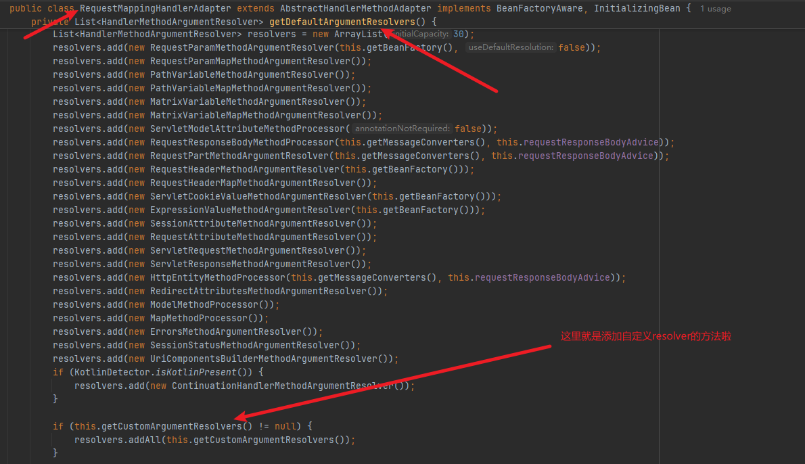
点进去看看我们要怎么添加，就可以完成目标咯，但是图中的这个类只有他的set方法，那么还需要看看这个set是什么时候被调用的，给set方法打一下断点.
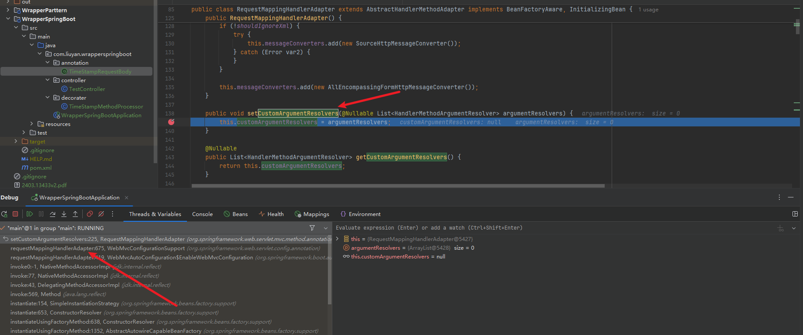
调用他的类名字叫WebMvcConfigurationSupport，大概率是配置类，再根据调用点点点。
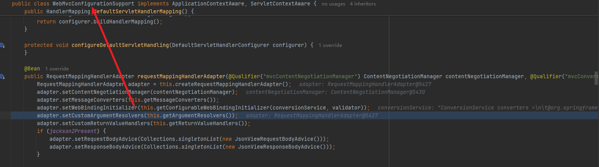
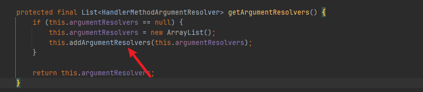
这里就是添加argumentResolver的地方，还是一个经典的懒加载，那么再进入一下这里的方法调用，发现这是一个接口，那么找找实现类，其中只有一个DelegatingWebMvcConfiguration，仔细观察一下这个类的代码，又是一个经典的装饰器实现，那我们势必要再看看他装饰的类(WebMvcConfigurerComposite)中addArgumentResolver的实现了，可以找到一个addWebMvcConfigurers的方法被调用，就需要看看DelegatingWebMvcConfiguration是怎么调用这个方法的了。
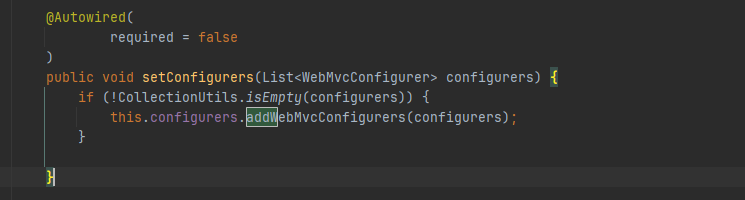
这里就可以看到了，他收集了所有实现了WebMvcConfigurer接口的类，加入到我们期望的list当中，写一个configurer类，实现WebMvcConfigurer接口，在addArgumentResolvers方法中添加我们的decorater。
1 | |
重新启动一下验证有没有加入。
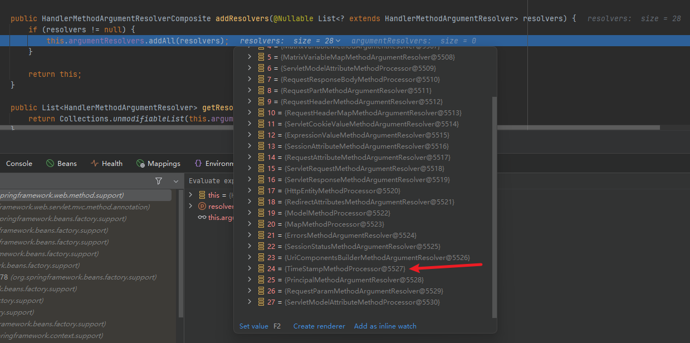
可以看到是已经加入了，但是现在还有一个问题，我们的自定义类中的processor是没有赋值了，那么该怎么获取到这个东西呢，因为我们原本包装的这个对象是通过new关键字直接加入到对应list当中的，我们需要拿到持有这个list的容器，通过遍历的方式来初始化我们的processor。RequestMappingHandlerAdapter这个类已经交给Spring容器进行管理了，那么事情就很简单。
不过我们没有把自己的类定义成Bean，所以还用不了@Autowired，可以直接通过ApplicationContext来获取，贴一小部分代码
1 | |
至此，我们的目标就完成了，结果如下图
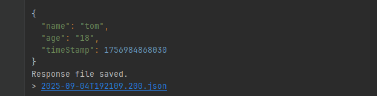
代码链接: https://github.com/JisoLya/DesignPattern/tree/master/WrapperSpringBoot